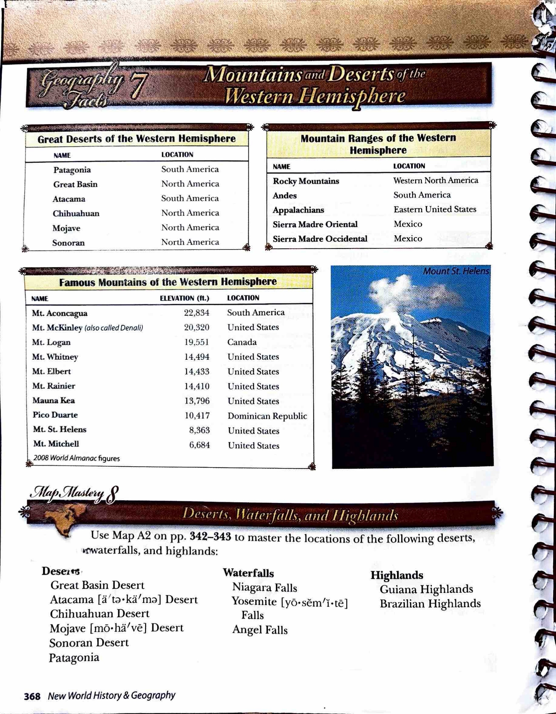

Geography Facts 7 · Mountains and Deserts of the Western Hemisphere
The source information is presented in tables. Choose Read this table to hear a table, or read the map locations below.
Source tables · Page 368
| Name | Location |
|---|---|
| Patagonia | South America |
| Great Basin | North America |
| Atacama | South America |
| Chihuahuan | North America |
| Mojave | North America |
| Sonoran | North America |
| Name | Location |
|---|---|
| Rocky Mountains | Western North America |
| Andes | South America |
| Appalachians | Eastern United States |
| Sierra Madre Oriental | Mexico |
| Sierra Madre Occidental | Mexico |
| Name | Elevation (ft.) | Location |
|---|---|---|
| Mt. Aconcagua | 22,834 | South America |
| Mt. McKinley (also called Denali) | 20,320 | United States |
| Mt. Logan | 19,551 | Canada |
| Mt. Whitney | 14,494 | United States |
| Mt. Elbert | 14,433 | United States |
| Mt. Rainier | 14,410 | United States |
| Mauna Kea | 13,796 | United States |
| Pico Duarte | 10,417 | Dominican Republic |
| Mt. St. Helens | 8,363 | United States |
| Mt. Mitchell | 6,684 | United States |
Map Mastery 8 · Deserts, Waterfalls, and Highlands
Use Map A2 on pp. 342–343 to master the locations of the following deserts, waterfalls, and highlands:
Deserts
- Great Basin Desert
- Atacama Desert
- Chihuahuan Desert
- Mojave Desert
- Sonoran Desert
- Patagonia
Waterfalls
- Niagara Falls
- Yosemite Falls
- Angel Falls
Highlands
- Guiana Highlands
- Brazilian Highlands
Comprehension Check · Multiple choice
Questions and choices are adapted for Harlan. Use the source reading, maps and tables to choose your answers.
Original source pages 368–368
Paragraphs, headings and emphasis were compared with the source page images. Pronunciation-guide glyphs remain visible in the source images and are not transcribed into study lists. Photo and diagram captions are excluded from the main reading.
Textbook page 368
Open full-size source page 368